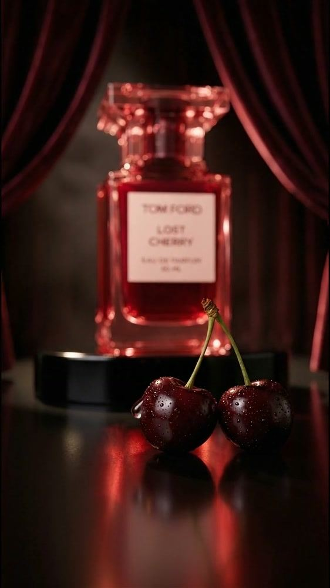

Öne çıkan proje, hibrit üretim
Mentos
Şehrin ritminde.
Filmi prodüksiyon ekibimizle İstanbul’da çektik; sette mümkün olmayan sahneleri AI ile ekledik.
34 snProjeyi incele
Mon Digital, AI destekli kreatif stüdyo
Markalar için yaratıcı konsept, AI destekli kampanya görselleri ve reklam filmleri üretiyoruz. Projenin ihtiyacına göre gerçek çekimle yapay zekâyı bir araya getiriyoruz.
Portfolyoyu görReklam filmleri, moda çalışmaları ve görsel seriler. Her projede statü açıkça yazıyor.
Öne çıkan proje, hibrit üretim
Şehrin ritminde.
Filmi prodüksiyon ekibimizle İstanbul’da çektik; sette mümkün olmayan sahneleri AI ile ekledik.
34 snProjeyi incele

Konsept marka
Kökünden sofrana.
16 snProjeyi incele

Bağımsız konsept
Dört ton, bir dokunuş.
20 snProjeyi incele

Müşteri işi
Gün değişir, ışıltın kalır.
15 snProjeyi incele

AI moda
Hayalet modelden moda filmine.
3 filmProjeyi incele

Bağımsız konsept
Bitter çikolata, bütün meyve.
15 snProjeyi incele

Konsept marka
Bir kare de kendine.
12 snProjeyi incele

Konsept marka
Işık iz bırakır.
40 snProjeyi incele

Bağımsız konsept
Kırmızı perde.
40 snProjeyi incele

Görsel seri, konsept marka
Çilek, pembe ve retro objeler.
9 görselProjeyi incele

Görsel seri, konsept marka
Zeytin, yağ dokusu ve doğal ışık.
9 görselProjeyi incele

Görsel seri, konsept marka
Gümüş, ışık ve yakın plan.
9 görselProjeyi incele
Quinzell’de tek bir ürünü fotoğraftan filme taşıdık. Aynı süreç koleksiyonun diğer ürünlerine de uygulanabilir.

Ürünün manken üzerindeki fotoğrafı.

Ürün, model üzerinde görselleştirildi.


Aynı takım, farklı renk ve modellerle.
Renk değişimi filmi, 18 sn.
Projeyi incele Diğer ürün dizisi ve üç film proje sayfasında.
Tek proje olarak ya da her ay düzenli üretimle çalışıyoruz.
Ürünün ve kampanyanın ana fikrini, görsel yönünü ve anlatımını belirliyoruz.
Ürün, model ve kullanım sahnelerinden oluşan AI destekli görsel seriler hazırlıyoruz.
Kısa reklam ve moda filmleri üretiyoruz. Gerektiğinde gerçek çekimle AI üretimini birleştiriyoruz.
Markanın dilini koruyan görsel ve video içeriklerini her ay planlı olarak üretiyoruz.
Mon Digital, markalar için yaratıcı konsept, kampanya görseli ve reklam filmi üreten bir kreatif stüdyodur. Yapay zekâyı üretimin parçası olarak kullanıyor, proje gerektirdiğinde gerçek çekimle birleştiriyoruz.